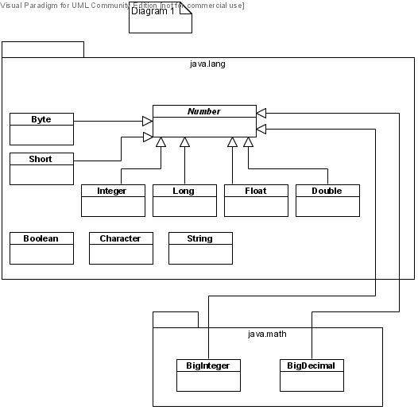
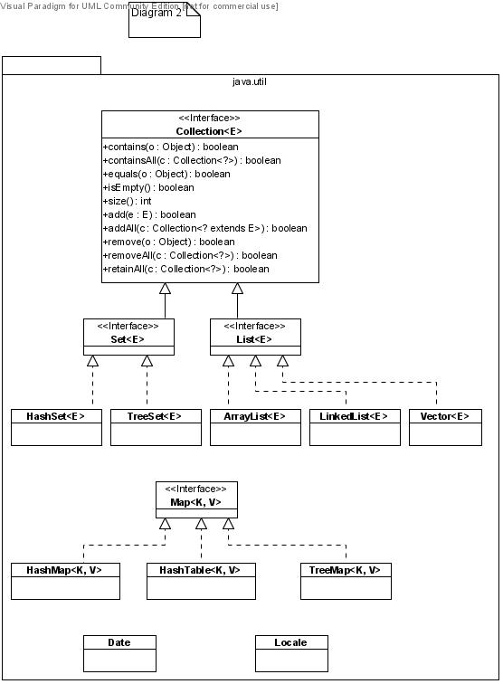

Persistent Types Supported in ObjectDB
-
primitive types:
boolean, byte, short, int, long, float, double, char
-
arrays of elements of persistent types
-
user-defined persistent classes
-
from java.lang and java.math packages: the classes in Diagram 1
-
from java.util package: the interfaces and classes in Diagram 2


Utility Functions in Collection<E> Interface
In the following the variable x represents the target collection of functions and
is assumed to be of type Collection<E>.
The generic type Collection<?> denotes Collection of elements of any type, which may differ from E.
- boolean x.contains(Object o) Tests if o ∈ x.
- boolean x.containsAll(Collection<?> c) Tests if c ⊆ x.
- boolean x.equals(Object o) Tests if x = o. There are two different interpretations of "equality" of collections.
One method makes "reference comparison", i.e., compares the references to x and o;
the other makes "value comparison", i.e., checks to see if x and o contain the same elements.
The Collection interface itself does not stipulate which method is to be implemented.
However, the Set and List interfaces do stipulate the implementation of value comparison.
- boolean x.isEmpty( ) Tests if x is the empty collection.
- int x.size( ) Returns the number of elements in x.
The following functions return true if and only if the target collection x has changed
as a result of the function call.
The bounded generic type Collection<? extends E> denotes Collection of
elements of type E or any of E's descendant classes.
- boolean x.add(E e) x = x ∪ {e}
- boolean x.addAll(Collection<? extends E> c) x = x ∪ c
- boolean x.remove(Object o) x = x − {o}
- boolean x.removeAll(Collection<?> c) x = x − c
- boolean x.retainAll(Collection<?> c) x = x ∩ c